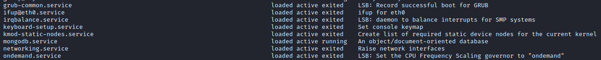
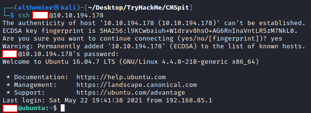

TryHackMe - CMSpit
Creator: Stuxnet
url: https://tryhackme.com/room/cmspit
Prerequisite:- Basic knowledge of Linux Terminal
- Basic knowledge of Burpsuite
- Basic knowledge of Metasploit
- Basic knowledge of Linux Privilege Escalation
Reconnaissance
Run Nmap scan to find possible entries point
Found port
22 and 80Checking the website

It is login page with
Cockpit name on it.
Since the title of the room is called `CMSpit`
maybe this is a CMS (Content Management System).
With quick google we can confirm yes this is a Cockpit CMS Login Page
Lets see what this page is about, use
View Page Source on your browser
-
While searching for version number, I found these 3
-link href="/assets/app/css/style.css?ver=0.11.1
-script src="/storage/tmp/7a812eebe1eda3162d79b4109b4787d4.js?ver=0.11.1
-/storage/tmp/4cc5a0d2487ec7f4c75b0cc9115bf601.js?ver=0.11.1 -
Found out how login system worked
form class="uk-form" method="post" action="/auth/check" onsubmit="{ submit }"
This part basically mean once we complete our login process (We type in username and password) the info will go to/auth/check, maybe for checking the credential of our login -
Since we know we have
/authdirectory which sounds very important, lets search what we have for/auth
-class="uk-button uk-button-link uk-link-muted" href="/auth/forgotpassword"
- AnotherApp.request('/auth/check',
- Version number, 90% is
0.11.1- There are 2 important info found, function for checking authentication from
/auth/check and possibly change password function /auth/forgotpasswordWith this information we have, lets google what we can use it for
Exploiting
With quick googling I found there are a vulnerabilities in Cockpit CMS version 0.11.1, CVE-2020-35846 and CVE-2020-35847 where you can enumerate username and reset this found username's password. There are a lot of article on how to do the exploits, but I decided to use 2 source. You can use which one, either method will lead you somewhere. We will use Burpsuite and Metasploit.1. Burpsuite
source: PT SwarmThere are 2 step we will accomplish using this method, Username Enumeration and Reset Password
-
Username Enumeration - CVE-2020-35846
In most cases, there is always a username ofadminin login page. So lets find out if we have admin user.- Start up your Burpsuite
- Activate proxy on your browser
-
Type in username:password. I did
admin:0 -
Burp will catch the
postrequest to/auth/check -
Send the
postrequest toRepeater

With this, Now we have 4 username. Lets use Admin and reset the password -
Reset Password - CVE-2020-35847 Reading through our,
the website need a reset password token in order to resetting password.
Lets extract token and try to reset
adminpassword
- Go back to login page
-
Login with username:password as
admin:0 -
Catch login
postrequest with burp and send it to repeater -
In line 1, change it to
POST /auth/newpassword HTTP/1.1 -
On line 14 or 15 where there is our login information, replace all as shown below
From

To

What we did is we dump everything related to
tokenbelong to the admin. If succeed our extraction, you should have a text start withstring(48). Save it somewhere starting fromrp-fetill the very end. Right click on
Right click on Requestpage and chooseSend to Repeaterand now we send our token to extract every info admin has With this extraction, we have
With this extraction, we have
- Username
- The name of the username
- Status
- Group
- Hashed password
- Reset token
-
Right click on our current
Requestpage and chooseSend to Repeater -
Change line 1 from
/auth/newpasswordto/auth/resetpassword -
Add comma (,) to the very end of
tokenand type in password with the new password
 You should be able to login to the website with new password,
but for the sake of learning lets see our 2nd method of this exploit.
You should be able to login to the website with new password,
but for the sake of learning lets see our 2nd method of this exploit.
2. Metasploit
source: Packet StormDetail on how the exploit is work is well explained by Packet Strom. By using metasploit, all process like in burpsuite can be done automatically.
-
Start metasploit by typing
msfconsole -
Search Cockpit CMS entries
search Cockpit - There is only 1, lets use it
-
We need 3 parameter
-
RHOSTwhich is the target IP -
RPORTdefault to 80, DO NOT change this -
TARGETURIvulnerable point, we knew this is/auth/checkfrom our research earlier -
LHOSTour machine IP, since the target run on TryHackMe VPN we need to set this IP to our VPN IP, you can find this usingifconfig tun0 -
After all set, run exploit by typing
run
-
show options earlier there is options to
set USER. We need this to run the 2nd stage.
Go ahead set USER, I set it as admin.We will find the same result like what we did with Burpuite when we extract info using admin's token. But this way we automatically reset and create new password. Go ahead login to the website using our new password.
Reverse Shell
What is reverse shell? In short, we trick the web server to run certain command to give us its shell to control the computer. Its not a complete shell like SSH, but its useful enough to get more info in our target machine.Follow instructions below to start.
- Click the Cockpit logo on top left corner
-
There are
Dashboard,Asstes,Finder,Settings, andAccounts. We only interested inFinderbut go ahead exploring what this web app has if you want -
Finderpart is where any content used in our Cockpit is listed. This is the best place for planting our reverse shell script. This is also wherewebflag.txtis. -
Create new file called
revshell.php - Go to https://www.revshells.com/
-
On
IP & Portpart, change the IP to your tun0 and port to5555
-
Run a new terminal using command on
Listener part -
On tab called
Reverse, scroll down until you foundPHP Pentest Monkey -
Copy everything using
copybutton to yourrevshell.phpfile -
Upload it to
Finder -
Create new tab in your browser, and access
10.10.194.178/revshell.phpto activate revshell. Remember to change the IP above with your target IP, if done correctly you should have shell in yourListenerterminal
www-data
If you run commandwhoami, you notice we run this command as
www-data. What is www-data?
Quoting from AskUbuntu thread:www-data is the user that web servers on Ubuntu (Apache, nginx, for example)
use by default for normal operation. The web server process can access any file
that www-data can access. It has no other importance.
Or for more complicated explanation,
www-data is the user in the web
server which the one who will serving the client. It is important to only give
www-data the most basic permissions for security reason.
www-data is also can run database, which is an absolute since
www-data need database to run function like login where it need compare
username and password from user input with database to grant the
client to access the website.
We will use www-data permissions to:
- Find another username that can use our target machine
- Find out how we can access thus username though SSH to get full access
-
Find another username so we can have more access
- Run
pwdto check where we are. It will tell us we are in thevery bottom of directoryindicated by/. If yours different then type incd /which bascially will take us to the very bottom of directory - Run
lsto see if we havehomedirectory. This way we know what other user using this machine - With command above, we confirm there is
homedirectory. Change our working directory to homecd home - Running
lswe have info of username in this machine If you run commandlsinside user directory, there isuser.txtwhich we cant access it, since we arewww-data. We are not allow to access this file. Hence we need to get other username
- Run
-
SSH using our target username Lets see what we can use to find out our username password
- Run command
systemctl. Scroll through you will find entries about mongodb running, lets see what it has for us.  - Run command
mongoto access mongodb and sure enough we dont need password. Refer to this source to learn more about how to use mongodb shell. -
Use
show databases - 1 interesting database,
sudousersbak..bakfile in linux usually used for backup. Maybe our user store the backup of sudo user list in the database , and since we can access without password we can just see what is inside - Run command
use sudousersbakthenshow collections - There are 3 entries,
flag,system.indexes,user. - Run command
db.user.find()to see whats inside, there are password for our username of target machine - Save it somewhere to run SSH as our username
flaghere is for db flag asked in the room. go ahead usedb.flag.find()
- Run command
SSH to our target machine using credential we found
Remember to change the IP to your target machine IP
Privilege Escalation
Since you are now an actual user in the machine, you can now print
user.txt
Now we need privilege escalation to root. The final task we have is to get
root.txt. For that we need to privilege escalation to root.
What is privilege escalation? In short, each user in Linux has certain permissions
they can use. Remember our www-data can't access user.txt
belong to our SSH user? Its because www-data is not listed
in the permissions of who can access it. And root.txt which can be
found usually in /root/root.txt is own by root and you guess it,
also only allow root to access this.
So, how then. Well its either; 1. We escalate to root or 2. We access root.txt as our
current user.
For this room we can use the second option, accessing root.txt
without even being root by using another exploit.
-
Run
sudo -lto see what command we can run assudo
-
The result show us that we can run
sudo exiftoolasrootwith no password -
Go to https://gtfobins.github.io/ and scroll
down until you find an entries related to
exiftool -
Click on it and you see down below there is entry of running
exitoolas sudo

In here we have to declare 2 bash variable, LFILE and INPUT As describe on the image:
-
LFILE=file_to_writeis use to tell bash where we will save the new file -
INPUT=input_fileis use to tell bash where to use the data for the input to new file
Basically we want to copy anything that inside of root.txt into a new file,
remember only root allowed to do any activity with
root.txt. With this method we can copy anything in root.txt
without even being root.

You may notice and wonder why I change directory into /tmp,
the reason is because its quicker to type
And you should have the final flag.
While doing research for the question for PoC and CVE vulnerability affecting the binary assigned to the system user, I found an article from Conviso's blog called "A case study on: CVE-2021-22204 – Exiftool RCE"
In short, the author of the blog explaining the Prove of Concept (PoC) of CVE-2021-22204. With this method, we can also get the same result as above, which not covered in this walkthrough.
Summary
CMSpit technically cover 3 CVE
- CVE-2020-35846
- CVE-2020-35847
- CVE-2021-22204
For CVE-2020-35846 and CVE-2020-35847 we hopefullt learned:
-
Using burpsuite by modifying the
requestmethod of HTTP where we injecting a mongo query. This happen becausecheckmethod from Auth controller which responsible for authenticating app user in Cockpit CMS version 0.11.1 does not properly check user input parameter, which allowing attacker to embedding an object with arbitrary MongoDB operators in the query which allowing us to enumerate username. This vulnerabilities found on 14th October 2020 and fixes on 15th October 2020.But then on 15th March 2021 by using NoSQL injection effecting on
/auth/newpasswordwhere it allowing force reset password throughrequestmethod. This vulnerability make it possible for attacker to change password of a user. - By using Metasploit module, we manage to do the same as burpsuite method but quicker. There are not much of an explanation since its the same exploit, just different tools.
CVE-2021-22204 will not be covered since its already well explained in Conviso blog. The exploit provided from GTFOBins already enough for us.
Feedback
Let me know if I did terrible mistake, or I explained it wrong.
Im not an expert on this subject. I wrote this as a walkthrough blog for note to myself in the future. Hopefully it also helpfull for you too.
- Send your correction to my twitter account
- Or send an email to my email
That its, thank you.
Uploaded: 05/09/2021
Last Update: -